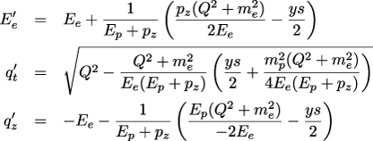
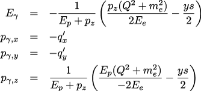
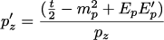
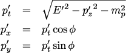
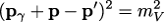

|
Home · Overview · User Guide · Library Reference Guide |
Sartre separates the physics calculation that selects an event's kinematics from construction of its final-state particles. The final-state generator turns the generated variables and beam four-momenta into a consistent Event record.
Sartre generates processes of the form e p → e' p' V and e A → e' A' V, where V can be any vector meson. This process is special because the final-state particles—e', p' or A', and V—can be almost completely determined from t, W, and Q.
The beam energies of the incoming electron and proton or nucleus are inputs to the generator. Sartre generates t, W, and Q, and therefore also y and x. This information is sufficient to derive the four-momenta of e', p', and V. The following describes the calculation implemented by ExclusiveFinalStateGenerator, used by Sartre. Four-vectors are written in bold.
The beam electron comes from the right, so qz is negative. The proton or nuclear beam comes from the left, so pz is positive.
The scattered-electron momentum q' is calculated from the generated kinematics:

To form a true four-momentum, an azimuthal angle must be selected. This does not change q't or q'z, so the azimuth φ is chosen randomly and uniformly in [0, 2π[. The final value is q' = (E'e, q't sin φ, q't cos φ, q'z).
The virtual-photon four-momentum follows directly from the incoming and scattered electron:

This reconstruction is less direct. From the definition t = (p - p')2, one relation follows immediately:

Additional relations, again using a randomly selected azimuthal angle, are:

The remaining issue is the scattered-target energy E'. Once it is known, the other components are fixed. Here it helps that there is only one generated particle, the vector meson, with a defined mass mV:

pγ and p are known. There are three unknowns—E', p'z, and p't—and three equations. The equations are nonlinear and do not have a simple analytical solution. ExclusiveFinalStateGenerator uses a Brent root finder to solve them. Once E' is known, the momenta can be calculated directly; the search is limited to the kinematically valid range.
The vector-meson four-momentum is then obtained from conservation of four-momentum:
pV = (p + q - q' - p')
The implementation includes additional checks, but this is the basic construction.
For incoherent nuclear events, the recoiling nuclear system can subsequently be passed to the nuclear-breakup model when enableNuclearBreakup=true. Stable breakup fragments are then appended to the event record. See ep and eA Modes for the coherent/incoherent distinction.
Sartre 2 adds inclusive diffractive DIS, e + p/A → e' + p'/A' + X. The diffractive system X does not have a predetermined hadronic composition. Sartre first reconstructs the scattered electron, virtual photon, and recoiling target from the generated inclusive kinematics. It then constructs a partonic qq̅ or qq̅g state with the selected quark flavour, momentum fractions, and colour connections.
The InclusiveFinalStateGenerator hands that colour-connected partonic system to Pythia 8. Sartre disables Pythia's hard-process generation and uses it as a hadronizer. Pythia's standard Lund string-fragmentation model converts the coloured partons into colour-neutral hadrons and performs the relevant decays. The resulting Pythia particles are copied into the Sartre event record, together with their PDG identifiers, four-momenta, status values, and available parent/daughter relations.
This is why an inclusive Sartre 2 build requires Pythia 8. The process is inclusive at the diffractive-system level, while the produced Sartre event contains an exclusive list of generated hadrons. The number of Pythia particles stored in the event is recorded in Event::numberOfPythiaParticlesStored.
In both workflows, the event record contains the incoming beams, scattered particles, generated final state, and the corresponding kinematic variables. The record is replaced by the next generated event; make a copy if it must be retained. The Event and Particle reference pages document its layout and status conventions.
For the exclusive dipole-model framework, see the Dipole Model documentation. For the fragmentation model used by Pythia 8, see the Pythia 8 Lund string-fragmentation documentation.
Last Update: September 14, 2026 |